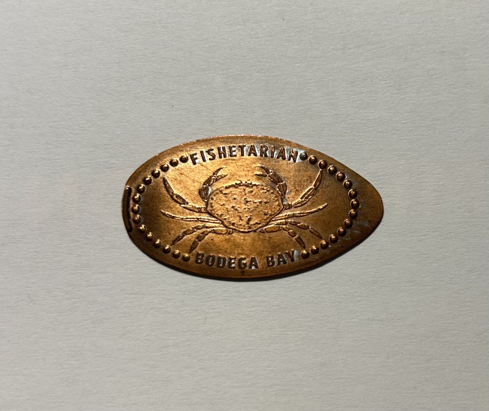

Fishetarian Fish Market Pressed Penny Machine c. 2010s and Fishetarian Pressed Penny, Crab c. 2023
This machine can be found at the Fishetarian Fish Market along Highway 1 on California’s coastline. The machine itself is reflective of the typical pressed penny machine fans will encounter today. It is standard to see a rectangular box, about 5 feet high, encouraging the user to get a ‘Pressed Penny Souvenier’ to take home. There are typically four different designs to choose from, and you begin by turning the crank in the center of the machine to select your design. Once selected, insert your penny and between one and three quarters, depending on your location, and turn the crank once again until your elongated coin pops out! Like most machines, Fishetarian customized the outside to match their laid back, northern Californian brand.